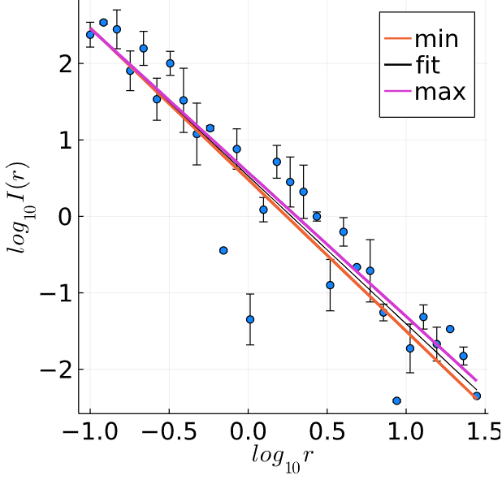

Objetivo Geral: Aprender como obter taxas de decaimento.
Objetivo Especifico: Fazer fits de curvas de decaimento com lei de potência, típico de sistemas de atenuação de energia no espaço. Como a taxa de decaimento é rápida, você precisará ter cuidado adicional para fazer seu fitting.
Conteúdo: Escala Logarítmica; Lei do Inverso do Quadrado da Distância; Despacito; Métodos dos Mínimos Quadrados; Propagação de Erros.
Uma situação que você fará uso de computador para facilitar sua vida no mundo da Física, será para obtenção e tratamentos de dados experimentais. Rotineiramente você precisará criar figuras com os seus resultados, estimar parâmetros relevantes do sistema e ainda escrever relatórios. Como não são todos os estudantes que tem a oportunidade de ter uma aula específica sobre esses assuntos, esse projeto será um guia inicial de como fazer tratamentos de dados.
2.1 O Experimento
Você pode aumentar ou diminuir a altura do som do seu celular com 2 botões. Contudo, seu ouvido não funciona da mesma maneira. Se você é exposto a sons de mesma intensidade, mas frequências diferentes, você terá a impressão que os sons estão em volumes diferentes. Essa sensibilidade diferente para cada frequência depende de pessoa para pessoa, e sua primeira atividade será descobrir os limites dos seus ouvidos.
Você irá realizar o experimento proposto em [Staff 2020], para acessar os seus detalhes, clique aqui. A atividade consiste em escutar sons com frequências bem definidas, porém de intensidades diferentes ao longo do tempo. Ao contar a quantidade de tons, você conseguirá calcular os seus limites auditivos.
Não esqueça que seu primeiro passo na atividade não é preencher a tabela, mas sim ajustar a altura do fone de ouvido para que você escute 18 ou 19 batidas em 3500Hz.
Leia toda a prática antes de começar a realiza-lá.
Não se preocupe com os resultados no regime de alta frequência. Fones de ouvidos não são feitos para ter alta fidelidade nessa região, logo, você provavelmente não escutará tantas batidas.
Relaxe, você não está surdo.
Esse experimento é longo e será inevitável a fadiga. Isso é um problema para garantir a qualidade dos seus dados, pois você terá muita atenção para contar as batidas no começo da prática, e não terá a mesma disposição e atenção para contar batidas no final do experimento.
Uma maneira de contornar o cansaço físico é não realizar o experimento de forma linear, escute as frequências em ordem aleatória.
Leia atentamente a descrição do experimento e preencha uma tabela com a quantidade de batidas que você escutou em cada repetição.
Armazene os seus resultados em uma planilha.
Salve os dados como um arquivo CSV.
Leia os dados em Julia com o pacote
DelimitedFiles.jl, e com o pacote de vizualização de sua escolha, faça um gráficosemilogxdos seus resultados.O tamanho da fonte da figura deve ser comparável ao texto onde ele estará embutido.
Salvar arquivos em formato .csv é conveniente apenas quando o conjunto de dados é pequeno, pois você pode acessar os dados com um editor de texto.
Quando o conjunto de dados é enorme, e você não precisa de uma banco de dados, use arquivos do formato .hdf5.
2.2 Atenuação Sonora
Experimentos científicos não feitos apenas para ter resultados em um gráfico, como aconteceu na prática anterior, pois o idealizador do experimento quer obter alguma informação relevante dos dados. Em alguns casos as variáveis relevantes ainda não são claras, e o objetivo do experimento é justamente descobrir quais são as propriedades básicas do sistema, em outros casos já existe um modelo matemático com uma lista de comportamentos esperados, e seu objetivo será obter alguns parâmetros desse modelo.
Como a modelagem completa do sistema auditivo humano não é tópico de interesse em nosso projeto, trabalharemos com tópico correlato, e muito mais simples, isto é, Atenuação Sonora pela Lei do Inverso do Quadrado da Distância
\[ I(r) = \frac{P}{4\pi r^2}, \tag{2.1}\]
onde \(I(r)\) é intensidade sonora a uma distância \(r\) da origem, e \(P\) é a potência da fonte. Um experimento que desejasse validar essa equação deveria encontrar 2 números: o primeiro é o termo geométrico \(4\pi\), e o segundo, é o crescimento quadrático, \(r^2\). Nessa sessão, não vamos criar um experimento, criaremos os dados e aprenderemos a estimar os parâmetros.
- Para nossoas simulações precisamos definir alguns valores para trabalhar com Equação 2.1, e nos basearemos no artigo [Gray 2019], onde o autor calcula quantos decibeis são produzidos por todas os Alexas do mundo tocando a música Despacito ao mesmo tempo1.
Com \(P=159\) e \(r \in [0.1, 28]\) (com 30 pontos), faça um
scatterde \(I(r)\) em escala loglog.Refaça a figura anterior, garantindo pontos igualmente espaçados em escala loglog.
Seria possível criar essa mesma figura com \(r\) iniciando em zero?
Supondo que esses dados foram obtidos de um experimento, você deve obter as constantes para \(y(x,p) = P/ar^b\). Já sabemos que \(a=4\pi\) e \(b=2\), mas você deve obter isso com o pacote
LsqFit.jl. Consulte a documentação do pacote aqui.Com os parâmetros que você obteve, aplique eles sobre o domínio \(r\) e obtenha um vetor
y_fit- e sobreponha com a figura de \(I(r)\) anterior para testar a qualidade do seu fit.
2.3 Dados com erros
Seus resultados experimentais anteriores foram perfeitos ou ideais, já que criamos eles no computador. No mundo real seus dados irão desviar do modelo matemático por inúmeros motivos, desde o equipamento de medição com problemas, até efeitos não-lineares que foram desconsiderados, começarem a serem relevantes. A solução inevitável é estimar o erro dos seus resultados, e existe todo um arcabouço matemático dedicado a isso. No entanto, é um processo chato e trabalhoso. Felizmente, computadores são ótimos para automatizar processos trabalhosos.
Vamos recriar o fit do problema anterior, porém adicionaremos erros aleatórios para emular dados reais.
Quando trabalhamos com simulações envolvendo números aleatórios, é uma boa prática cientifica controlar o gerador de números aleatórios, assim, os seus dados podem ser reproduzidos por outras pessoas. Com o pacote
Random.jlfixe aseedde números aleatórios com o número 18 - não tem nada de especial com esse número. Ele só foi fixado para você não ficar escolhendo números.Para cada valor de \(I(r)\), multiplique por um número aleatório com a função
rand, e exiba seus novos resultados comscatterplot. Multiplicar por números aleatórios vai garantir que a ordem de grandeza do erro é proporcional ao valor da medição.Com o pacote
LsqFit.jlcalcule novamente os valores dos parâmetros \(a\) e \(b\). O pacote permite estimar o erro de cada parâmetro com a funçãostderror(fit)ou o intervalo de confiança comconfidence_interval(fit). Exiba curvas de intervalo de confiança, junto da curvay_fit.
Até o momento, seus resultados devem estar parecido com a Figura 2.1. Tecnicamente, nós não fizemos errado, usamos equações certas e podemos ainda ajustar a função curve_fit para fixar os limites inferiores/superiores de cada parâmetro, e mesmo assim, eu já lhe garanto que isso não é a solução.

LsqFit.jl.Nosso erro foi esquecer que trabalhamos com valores em escala logarítmica. O nome do pacote utilizado, LsqFit.jl, significa Least-Squares Fitting, que em essência, calcula o erro quadrático entre sua função modelo com os dados experimentais. Os nossos dados possuem valores que decrescem ordens de magnitude, logo, pontos próximos da origem, possuem erros maiores, e serão as regiões dominantes do ponto de vista do algoritmo.
A primeira solução é fazer um fit ponderado, no qual você informa ao algoritmo qual a “importância”, o “peso”, a “contribuição” que cada valor \(I(r)\) possui, com um vetor w_t. Normalmente você faz esse procedimento quando já conhece alguma informação extra do sistema. No nosso exemplo, isso não é verdade, e o melhor que poderiamos fazer é supor alguns pesos ad hoc, e usar o comando
curve_fit(modelo, x_data, y_data, wt, condição_inicial)A segunda solução é a correta, vamos linearizar os dados, isto é, nós aplicamos mudanças de variáveis no sistema, de tal forma que ele se comporte como uma equação de primeiro grau. Em problemas com fatores exponenciais, nossa transformação acontece aplicando a função logarítmica:
\[ \begin{alignat*}{4} I(r) &= \frac{P}{4\pi r^2}\\ I(r) &= \frac{1}{r^2}\cdot\frac{P}{4\pi}\\ log_{10}(I(r)) &= log_{10}\left (\frac{1}{r^2} \right ) + log_{10}\left (\frac{P}{4\pi} \right )\\ log_{10}(I(r)) &= log_{10}\left (r^{-2} \right ) + log_{10}\left (\frac{P}{4\pi}\right )\\ log_{10}(I(r)) &= -2log_{10}(r) + log_{10}\left (\frac{P}{4\pi}\right )\\ Y &= -2X + C \end{alignat*} \tag{2.2}\]
- Linearize seus dados
Calcule o logaritmo de \(r\) e \(I(r)\)
Refaça o seu fit com um modelo do tipo \(y(x,p) = p_1x + p_2\).
Exiba seus resultados e veja que agora estarão muito melhores.
2.4 Dados com Mais Erros
Vamos aprimorar o nosso conhecimento do processo de fitting. Nós usamoa a biblioteca LsqFit.jl pela conivência e nos deparamos com uma situação simples onde ela falhou. Felizmente eu lhe disse a origem do problema e sua solução.
Mas e se seu código rodasse dentro de um sistema embarcado?2 Para economizar bateria do equipamento, você gostaria de refazer todas as contas do fit, porém otimizadas com comandos específicos do seu dispositivo. Logo, o que você precisa é conhecer a matemática dos Métodos dos Mínimos Quadrados.
Vamos usar o fitting da função de primeiro grau, pois nós acabamos de usar ela. Suponha uma função modelo do tipo
\[ y(r) = \alpha r + \beta \]
A distância \(d_i\) de cada ponto experimental \((r_i, I_i)\) e a curva de fit é:
\[ d_i = I_i - (\alpha r_i + \beta) \]
O Métodos dos Mínimos Quadrados é autoexplicativo, vamos somar todos os \(N\) valores dos erros, \(d_i\), ao quadrado. Precisaremos de um nome para essa quantidade, e vou chamar de \(D\):
\[ D = \sum_{i=1}^N [I_i - (\alpha r_i + \beta)]^2 \]
Buscamos o valor mínimo de \(D\) variando \(\alpha\) e \(\beta\), ou seja, a primeira derivada parcial deve ser nula:
\[ \begin{alignat*}{4} \frac{\partial D}{\partial \alpha} &= \sum_{i=1}^N 2(-r_i)[I_i - (\alpha r_i + \beta)]= 0\\ \frac{\partial D}{\partial \beta} &= \sum_{i=1}^N 2(-1)[I_i - (\alpha r_i + \beta)]= 0 \end{alignat*} \]
Agora reorganizando as expressões, temos uma sistema linear:
\[ \begin{alignat*}{4} \alpha \sum_{i=1}^N r_i^2 + \beta \sum_{i=1}^N r_i &= \sum_{i=1}^N r_iI_i\\ \alpha \sum_{i=1}^N r_i + \beta N &= \sum_{i=1}^N I_i \end{alignat*} \]
Finalmente, podemos escrever esse sistema em forma matricial:
\[ \begin{pmatrix} \sum_{i=1}^N r_i^2 & \sum_{i=1}^N r_i \\ \sum_{i=1}^N r_i & N \end{pmatrix} \begin{pmatrix} \alpha \\ \beta \end{pmatrix} = \begin{pmatrix} \sum_{i=1}^N r_iI_i \\ \sum_{i=1}^N I_i \end{pmatrix} \tag{2.3}\]
Sistemas lineares do tipo \(Ax=b\) são facilmente resolvidos em Julia com o operador backslash, o barra invertida: \(x= A\backslash b\).
Até o momento nós obtivemos o valor de \(\alpha\) e \(\beta\), mas ainda faltam as margem de erro. No lugar de aprender os detalhes de estatística de matriz de covariância, vamos focar em outro assunto correlato, mais pertinente a dados experimentais: Cada medição experimental possui um erro associado.
Não precisamos aprender o cálculo de Propagação de Erros, pois isso é a finalidade de cursos de laboratório. O que faremos é usar um pacote chamado Measurements.jl que faz toda a propagação de erro nativamente em Julia, ou seja, podemos fazer qualquer análise com os nossos dados, e a propagação de erro será automática.
Com os mesmos dados de \(r\) e \(I(r)\) que você calculo o fit através de linearização. Vamos recalcular o fit usando o sistema de equações que foi apresentado. A diferença, é que você adicionará um erro para cada valor de \(I(r)\) e verá a propagação de erros acontecer.
Para cada valor de \(I(r)\) adicione um erro experimental3. Nada impede lhe de adicionar erros na medição de \(r\), mas a figura final fica confusa, então eu quero que você não faça isso.
Faça o
scatterplot usando o pacotePlots.jl, pois ela é integrada com o pacote , e seus gráficos já terão barras de erros.Crie novos vetores \((r\_log, I\_log)\), com os valores de \((r, I(r))\) em escala logarítmica.
Resolva o sistema linear da Equação 2.3 com os seus dados de \((r\_log, I\_log)\).
Para extrair o Valor do fit use
Measurements.value, e para as incertezas, useMeasurements.uncertainty. Com esses comandos, você consegue calcular a margem de erro, e finalmente pode exibir a última figura com todos os resultados.
Ao final desse projeto, sua figura estará próxima da Figura 2.2.
